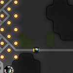
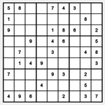
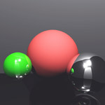
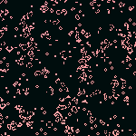
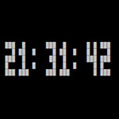

Raytracer GLSL
Raytracer webgl exécuté en temps réel avec diffuse, specular, reflection et refraction.

Screeps AI
Intelligence artificielle avec configuration pour l'automatisation du jeu de code multijoueur Screeps.

Sudoku Generator
Générateur de grille Sudoku sur une base aléatoire suivi d'un processus d'essai et erreur.

Raytracer Rust
Version Rust de mon raytracer GLSL. Génère le rendu d'un frame de la scène utilisant le diffuse, specular, reflection et refraction.

Quadtree
Algorithme quadtree en javascript qui permet de regrouper des éléments basé sur une valeur 2D (ex: x,y).



Go Terminal Clock
Horloge de terminal utilisant le language Go sans aucune dépendances.